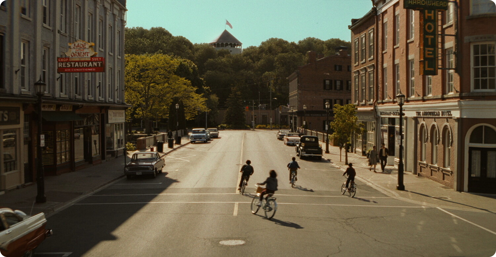
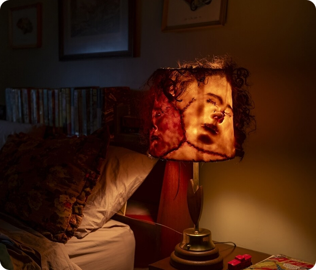
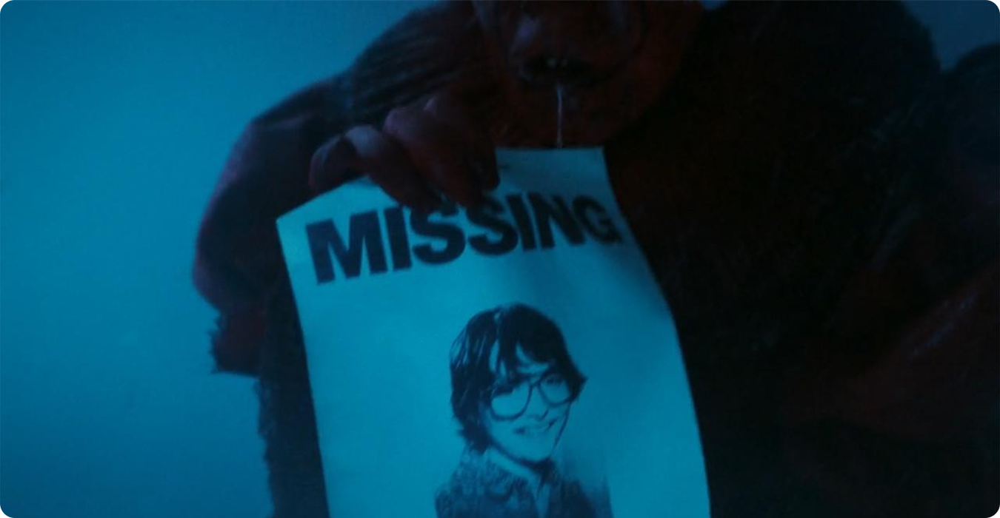
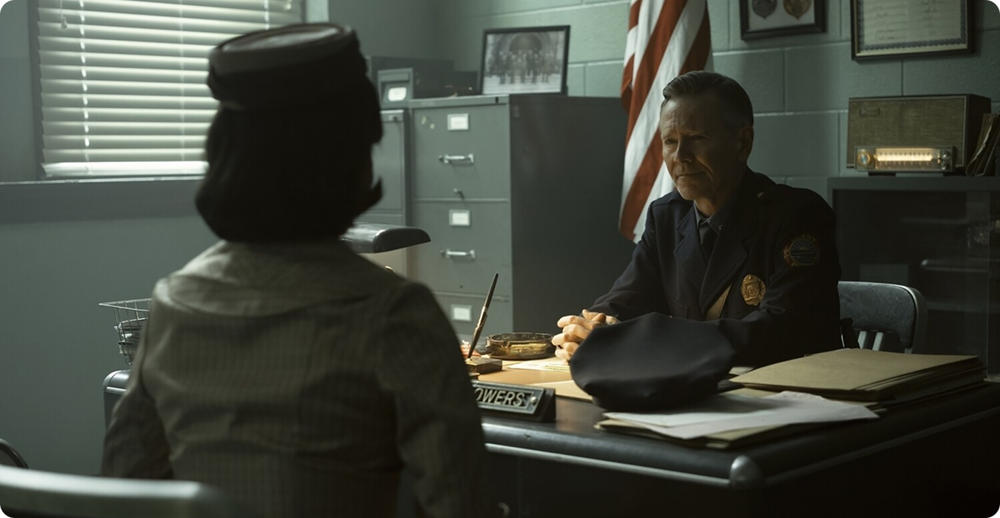
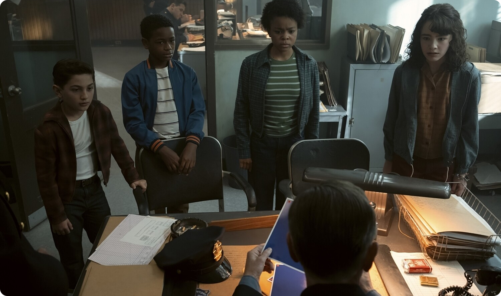
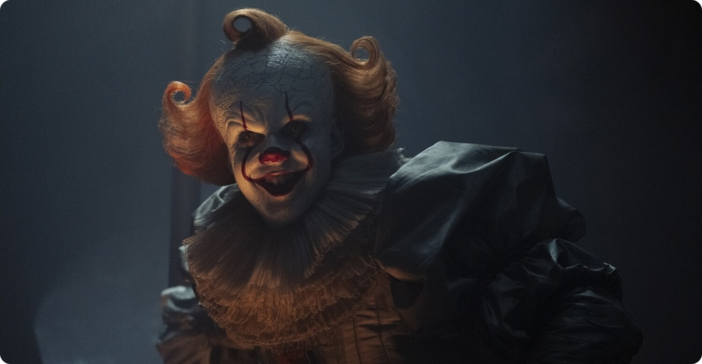

Поверхность: иллюзия нормальности
«Верхний» Дерри — это привычный мир: улицы, школы, семьи и повседневная жизнь. Здесь всё выглядит упорядоченным и безопасным. Люди продолжают работать, общаться, строить отношения. То есть на первый взгляд создаётся картина типичной обыденности, однако на самом деле это лишь подобие нормальности, ведь тревожные события и странности игнорируются, списываются на случайности, а опасность вовсе не признаётся открыто.



Поверхность функционирует за счёт отрицания. Чтобы сохранить ощущение контроля, жители предпочитают не замечать того, что не вписывается в привычную картину мира.
Подземный уровень: пространство вытесненного
«Нижний» Дерри — это не только канализация и тёмные туннели. Это символическое пространство, где сосредоточено всё вытесненное из верхнего слоя. Там концентрируются страх, насилие и травмы общества.

Именно здесь обитает зло, но важно понимать: оно не изолировано от «верхнего» мира. Напротив, оно питается тем, что скрыто и не проговаривается. Подземный уровень — это отражение того, что общество не готово принять.

Граница между мирами
Ключевая особенность Дерри — проницаемость границы. «Верх» и «низ» не существуют отдельно. Они постоянно пересекаются, хотя большинство жителей этого не осознаёт. Эта граница проявляется:
- в исчезновениях, которые не получают объяснения;
- в страхах, которые нельзя рационализировать;
- в поведении людей, которое становится иррациональным.

Дети в этой системе оказываются более чувствительными к разрыву между реальностями. Они замечают то, что взрослые предпочитают игнорировать.
Почему двойная реальность сохраняется

Система держится за счёт коллективного соглашения не смотреть «вниз». Признание второй реальности разрушило бы ощущение безопасности, поэтому общество поддерживает иллюзию единого, понятного мира. Как следствие, проблема не осознаётся обществом полностью, а зло, как следствие, не получает никакого сопротивления. В итоге ничего не остаётся, кроме повторения цикла — замкнутого круга.

Двойная структура становится устойчивой именно потому, что она удобна. Она позволяет жить «нормально», не сталкиваясь с последствиями.
Вывод
Дерри — это модель общества, в котором существует разрыв между видимой и скрытой реальностью. «Город сверху» — это порядок и иллюзия контроля, «город снизу» — накопленный страх и насилие.

Сериал показывает важную мысль: пока существует это разделение, зло не исчезнет. Оно будет возвращаться из «низа» в «верх», напоминая о том, что вытесненное никогда не исчезает окончательно.